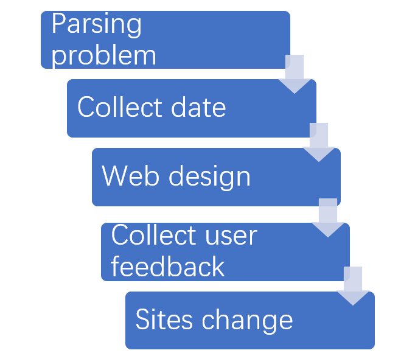
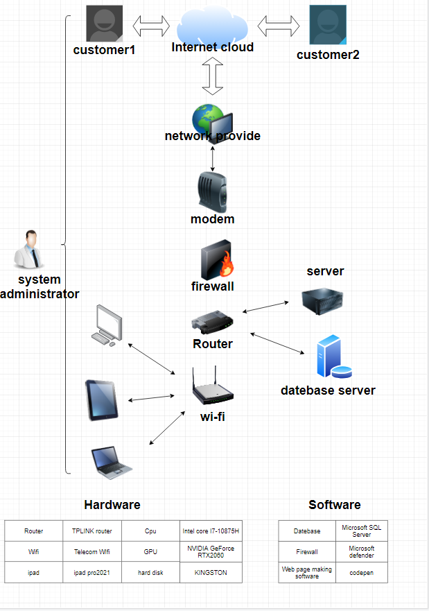

The purpose of the website is to attract users to promote information on the main platform, it can help enterprises through the network channel to achieve online operation and activity marketing. With the website can help promote the company's core spirit and products, is an indispensable link of enterprise development. And propaganda through the website, can greatly reduce the cost of human and material resources of the enterprise, so that the cost performance to achieve the highest. The method of web page establishment has the waterfall type, the scrolling way of waterfall flow can become the best way to attract users.Sometimes the best visual rendering may not happen entirely on the visible page.
 
hardware
1laptop 2ipad 3personal computer
software
1firewall 2datebase 3code pen
| Name | Micheal BinHe | Pamper HongyouXu |
|---|---|---|
| System Name | CRM | CRM |
| System Objectives | Collect and manage customer information | Summarize customer information |
| 3 essential system features and components | 1. Market acquisition 2. market demand analysis 3. Customer after sales management |
1. Business opportunity management 2. Business process specification 3. Customer follow-up |
| 3 essential hardware from this system | 1. tp link 2. ASUS laptop 3. iphone 13 |
1. tp link 2. MacBook Air 3. Lenovo computer |
| 3 essential software from this system | 1. Oracle Database 12c
2. firewall 3. Internet Information Services (IIS) 10.0 Express |
1. Pfsense firewall
2. Oracle Database 12c 3. Internet Information Services (IIS) 10.0 Express |
| 2 external system components | 1.Material allocation system 2.Human Resource Management |
1.Lead Management 2.Customer feedback system |
| 2 system benefits | 1.Improve customer satisfaction with the product 2.Reduce marketing costs |
1.Maintain old customers and find new customers 2.Analyze the next market demand with big data |
| 2 project difficulties | 1.Increased management difficulty 2.Additional parts need to be carried out for system maintenance |
1.Internal security measures are essential 2.More money is needed to run the system |